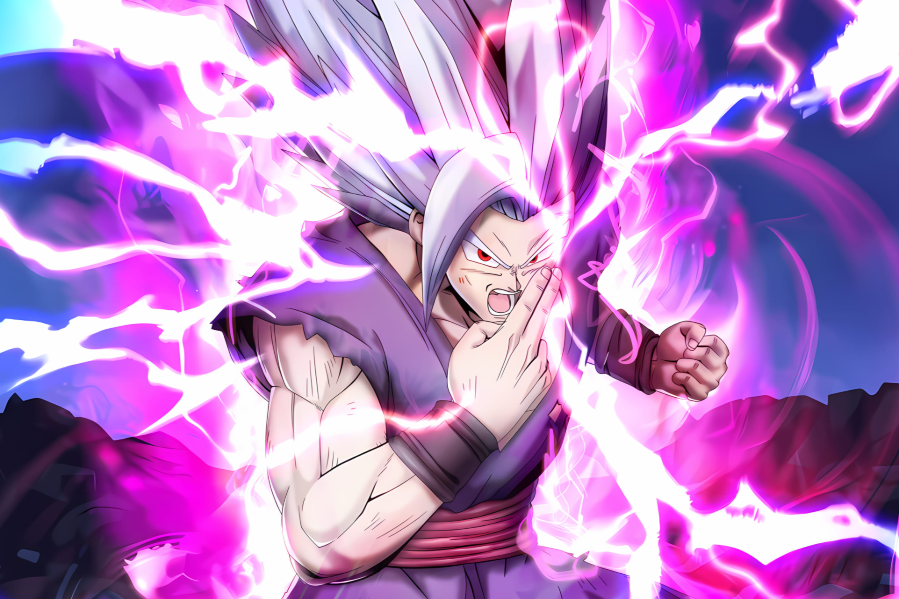
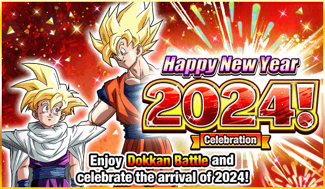
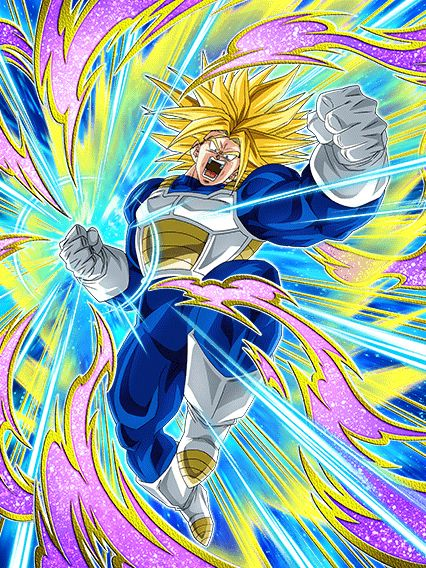
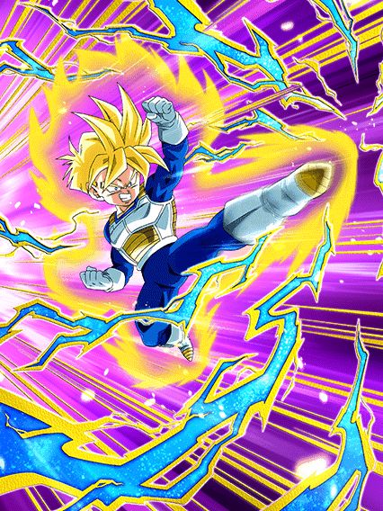
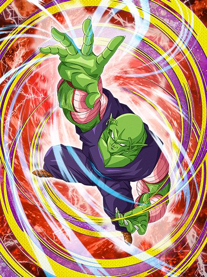
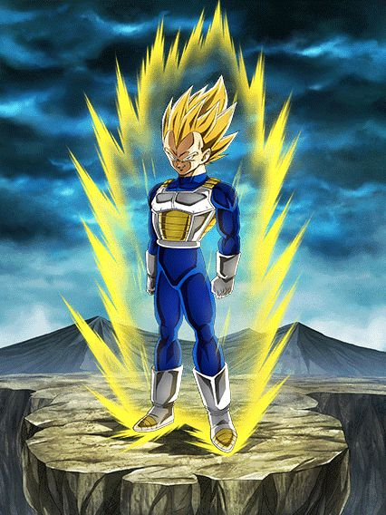
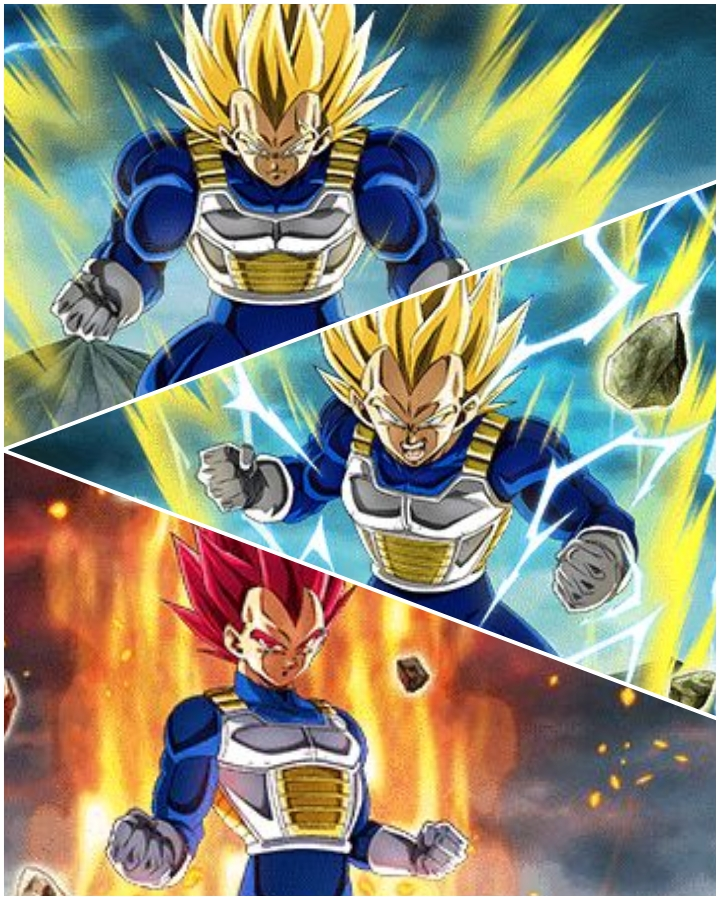
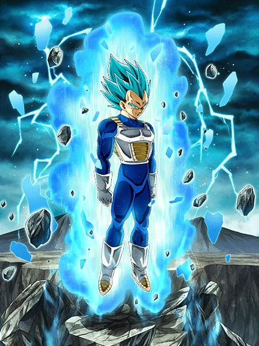

VOLTAR
Nono Ano

^
Ano novo muito hype

Nunca senti tanto hype.
A torcida é toda que a sincronização aconteça, pq os 3 primeiros meses desse ano vão ser.. desertos.
"super" trunks
")
2024 começando com o real maior card de todos os tempos.
Antes que eu comece a ironizar tudo, o trunks é inexplicavelmente horrível na forma base, ele é todo travado por condições bestas que só atrapalham ele.
Agora, continuando, o trunks é o melhor card do jogo, pra começar ele tem 50% DE CHANCE DE DEFESA ATIVA, e essa defesa ativa ainda é condicional, só com 3 aliados android/cell saga no time, QUE INCRÍVEL
Ele ainda fica efetivo contra tudo contra um INIMIGO CHAMADO CELL, WOW QUANTOS BOSSES CELL NÓS TEMOS NÉ???? O TRUNKS DESTRÓI TODOS TODOS
Por sinal o buff ali dos aliados tmb dá pra ele um adicional de 70% e 100% de ATK e DEF, então ele é realmente travado a esse time e nada mais
E olha só! Acabou o kit dele, ele só tem isso
Parabéns trunks, sua forma base é muito absurda já pra competir com o resto do jogo, ainda mais que mesmo com a defesa ativa ele ainda não consegue tankar nada
Mas claro, o card não estaria completo sem uma condição horrível de transformação né?
Boa sorte tentando atacar 5 vezes pra finalmente poder se transformar, ou claro, estar contra um Cell no turno 5, que fácil..

E agora ele vira um card muito bom??????
O trunks real faz uma transição de água pro vinho, já que do nada ele se torna um card muito forte
Você poderia dizer que ele é um baita canhão de vidro muito diferenciado, já q se vc sair vivo da forma base, transformado ele fica insano
Pra começar ele tem defesa ativa garantida por 3 turnos, isso já é o suficiente já que quando ele se transformar a luta vai estar na última fase ou no final já, então é..
Ele tem 300% de ATK e DEF (balanceado) e MAIS 200% dependendo do quão alta tá sua vida, isso com mais 100% quando ele faz um super, oq é insano, o salto nos stats dele é absurdo
Por sinal ele tem um super adicional garantido e crítico garantido também, balanceado? Ainda não
Não acabou, o trunks, sendo exatamente esse card incrível que ele é, também tem a mecânica de usar uma active skill mais de uma vez, no caso, 1 vez na forma base e outra na transformação
Onde então na sua INCRÍVEL active de 10 SEGUNDOS ele se aproxima do inimigo, faz um T-Pose, diz 「地獄のような未来は もうたくさんだ!!」/ "Já chega de um futuro infernal!!", e estoura o inimigo, fim da active
Sim, eu podia colocar a active aqui 6 vezes pra pelo menos ter 1 minuto de video
Sim, a active é boa, na forma base ela quebra só 1 ataque do inimigo mas transformado ele impede o inimigo de atacar no turno, isso é muito forte, mas de novo, sobreviver os primeiros 5 turnos com esse cara é mais difícil do que parece..
No geral, o trunks é um card horrível onde vc tem q criar um time todo em volta dele pra ajudar ele a transformar e se vc for maluco de levar 2 numa luta, cê pode ter 2 turnos sem ataques oq é bem forte, mas de novo, condições né..
O trunks tem suas falhas, sim, mas que bom que ele veio com um personagem secundário que totalmente vai ajudar ele e não ser pior ainda... né?
gohan str 💀

Eu.. não achei que tinha como piorar.
Esse gohan tá num nível onde não dá pra fazer piada ou ironizar, ele simplesmente é horrível, não tem oq fazer
Ele é um suporte pra heavenly events e mastered evolution, categorias que precisam de uma ajuda, só que ele não ajuda em nada
O gohan é um card que tem a defesa tremendamente baixa pq os stats dele são muito baixos, independente da passiva, oq é engraçado, se ele tivesse stats mais decentes, ele até seria um card "usável", mas ele só não consegue
Em resumo, ele tem uns 240% de ATK e DEF q não ajudam em nada, builda 100% de DEF tomando golpes, oq é impossível já q ele morre pra qualquer coisa, e stacka 50 de ATK no super, que também não adianta pq ele não dá dano 💀
Oq ele tem de diferencial é q ele cura bastante vida, mas de que adianta se ele morre pra tudo e levar ele no time já tá zuando seu HP?
Acho q eu nem preciso explicar mais nada, esse card é horrível, mas tão horrível que não merece nem piada.
eza do piccolo super strike F2P

O primeiro piccolo ruim em anos.
Bom, esse piccolo é um suporte que dá dano, é o típico orb changer mas que precisa dos próprios orbs então ele n tá ajudando o time em nada
Literal metade do kit dele vem quando ele pega 4 orbs ou mais, aumentando o suporte dele de 20% pra 50%, dando mais ki, e ganhando 60% de chance de critar, a defesa? Quem precisa disso?
É, ele não tanka absolutamente nada, triste o rapaz.
Eza do vegeta das mil transformações

Já pode demorar até o turno 7?
Bom, esse eza tinha algum potencial, já que ele é o último desse trio q foi o freeza, ele e o goku q tem várias transformações, mas é difícil levar ele a sério infelizmente
Tipo, o vegeta tinha um kit base interessante, stack de DEF, leader skill pra pure saiyans, um pouquinho de nuke ali.. era alguma coisa já
Mas o eza não salvou muito.
Infelizmente o vegeta é o card n.28742969 que stacka DEF e não tem nenhuma mecânica defensiva pra ajudar, ou seja, defesa bruta contra bosses que te destroem no turno 1, bem útil
Bom, o eza decidiu que seria muito engraçado dar pra ele 70% de chance de mudar orbs, pq é logicamente divertido fazer isso né (o orb change ainda é horrível), não bastando só isso ele ainda lança um super adicional com 7 orbs, sabe quem lançou em 2023 e com um orb change e mecânica de pegar orbs melhor? Não preciso nem mencionar o goat né..
Enfim, o stack do vegeta aumentou de 30% pra 50%, mas é lógico que não ia ser o bastante né, ele é horrível na forma base.. e infelizmente, não muda muito nas transformações automáticas dele..

Bom, nessa transição de transformações o vegeta segue praticamente o mesmo com só leves aumentos nos buffs q ele ganha, mas dá pra só ignorar o super vegeta
No ssj2 o orb change dele finalmente se torna garantido e o super adicional agr é com 6 orbs.. parabéns pra transformação q vc pega no melhor cenário possível no turno 5..
No ssj god ele pelo menos fica bom, o nuking dele já tá em 25% de ATK por orb e o super adicional diminuiu de novo pra 5 orbs agora, tá melhorzinho
No geral as transformações até ajudam mas não tanto, ele continua tendo defesa bruta, só tá facilitando ele stackar essa defesa q nem vai ser muito útil..
Pelo menos depois de tudo isso né..

Pronto, agora ele é usável.
Depois de passar por 20 transformações, o vegeta realmente vira um card bom, já que no turno 1 ele muda todos TODOS os orbs pra phy, assim automaticamente dando pra ele a melhor nuke possivel, além de ainda assim manter o orb change depois
Agr uma coisa que me deixa irritado é o fato do super adicional dele continuar sendo com 5 orbs, ok, nada de errado, mas agr ele dá crítico garantido caso vc pegue 23 orbs, vc literalmente dá crítico garantido no turno da nuke e real nunca mais, como assim???
Tirando isso, obviamente vc stackou antes de chegar aq e com 2 supers o vegeta tem uma defesa boa, mas olha só que grande novidade, demora demais pra chegar no blue e ele é praticamente só bom em 1 turno, depois acaba
No geral um eza que tinha potencial e que mataram completamente, triste q dos 3 cards nesse estilo, nenhum é usável direito..
Eza de um super vegeta int

É melhor você estar contra um cell parte 2 a vingança dos derrotados (sim estou falando do trunks teq)
Pode até parecer engraçado, mas esse vegeta até q é um card decente contra um inimigo androids, e contra um cell ele é realmente forte, mas ele é travado nisso, tem crítico garantido e adicional garantido blá blá blá.. sem um inimigo específico ele não faz nada, eles precisam parar de restringir cards desse jeito..
Você chegou ao fim dessa página!
Ou talvez.. eu não tenha terminado ainda? Sei lá
Obrigado por ler tudo, e fica a vontade pra ver outras